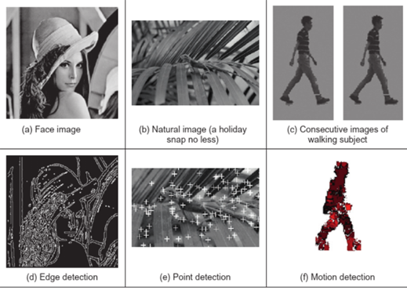
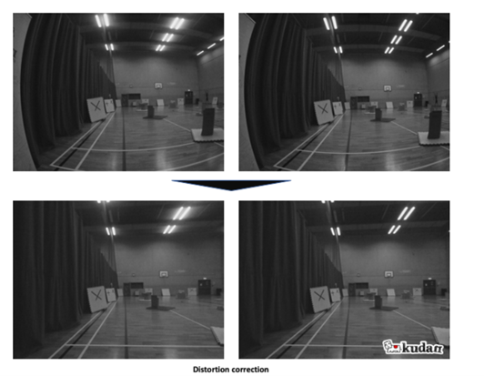

Visualisation within robots is used to properly map out an environment they are positioned within, this can be performed by multiple methods such as Visual
Simultaneous Location and Mapping (VSLAM) (Visual SLAM: The Basics ,2020) and the use of Light Detection and ranging (LiDAR) technology (McManamon P, 2019).
These technologies have a variety of advantages and disadvantages to each and allow for further development through software’s which can advance these
technologies such as occlusion algorithms (Isobe Y et al, 2018) and computer vision algorithms e.g. YOLOv8 (Ultranlytics YOLOv8 , 2024) These technologies are also
synergetic and can work in unison to provide a highly accurate visualisation for the robot when it is placed in a dynamic environment.
Introduction
Visualisation is a key part of a robot’s ability to be self-autonomous which allows for independent movement and analysis of an environment. This is done
through many aspects in robotics including producing a virtual environment for the robot to move in such as ones created in VSLAM while using measurement
techniques such as LIDAR which uses electromagnetic waves to provide accurate distances between the robot and objects in a 3D environment. These
measurements can allow for the robot to move more accurately in an environment and reduce the risk of damage to the robot from collisions.
LiDAR Technology
LiDAR is a technique used for tracking the distance between the sensor and an object in front of it by using the reflection of electromagnetic waves to pinpoint
displacement from the object (McManamon P, 2019). This array allows for visual confirmation of obstacles and depth as an obstacle and the wall behind it
would bounce back to the sensor at different speeds. This is like the method used to estimate sea depth. With the equation: Distance = (Time*Speed of light)/2
This allows for an accurate depth of objects which the robot can visualise. This technique does not require a camera to extract information from images so
is more efficient than other visualization methods due to less data needing to be processed. However, this technique gives a visualization of the environment
which is difficult for an operator to read and act on. This shows that LiDAR is better suited for autonomous machines due to it retrieving data which is
difficult for a human operator to understand.
SLAM and VSLAM
SLAM “involves a system that simultaneously completes the positioning of the mobile robot itself and the map construction of the surrounding environment without
any prior environmental information” (Yang, S: SGC-VSLAM). This means that any sensor can be used such as LiDAR to interpret the environment and obstacles around
the robot. However, Visual SLAM differs from this due to the primary sensor for the robot being a camera. This is done through analysis of images and highlighting
key points within the image this can be seen in figure 1 below (Cai D et al, 2024) which shows the data which is extracted from photos when edge detection and
point detection are used alongside comparing two images to show motion detection. This demonstrates how a large scope of data can be retrieved using VSLAM and its
related software. However, there are some issues with this considering distortion from the camera lens which would impact the processing of key points. This is
solved through algorithms to undo this distortion shown in figure 2 below (Visual SLAM: The Basics, 2020) this is done using a distortion grid which makes the
image clearer and easier to produce key points and other estimations such as depth estimation.

Figure 1

Figure 2
Importance of 3D Visualisation
3d visualization is key to allowing for robots to act autonomously due to it allowing for the robot to process its environment around it without the aid of an
operator. Diversity in how an environment is read allows for more accurate readings of an environment and will remove any error which could be caused by faulty
sensors or inaccuracies in its programming. An example of where 3d visualisation is important is the ROBONAUT 2(NASA , 2022). This shows that visualisation software like
this is key when a human is unable to see in an environment. Visualisation software is key to the navigation of unknown environments where humans cannot
travel and in which there needs to be a response where human involvement is dangerous or impossible for a human to achieve.
Software Applications
Sensors are a single part of the process of 3d Visualisation. The most important part is the algorithms and processes such as YOLO-8 (Ultranlytics YOLOv8, 2024)
which is a software that allows for computer vision and can be specified to unique purposes based on what the robot requires for instance a Rubik’s cube solver
would require an orientation-based installation of YOLO to determine the position of people. This links with the discussed visualisation methods as it can
process the information that VSLAM receives from the environment. Other software such as occlusion algorithms shown in a paper by Yuzuka Isobe (2018) Which
details how occlusion is used to negate occlusion due to light changes this allows for objects to be seen when in darkness the paper also discusses that
Machine Learning is used for occlusion algorithms using predefined data sets which can be analysed to teach the program what should exist in the occluded area.
Movement Tracking
A key part of a robot is dealing with position tracking this can be done through multiple means such as an odometer which tracks the number of wheel
rotations to estimate a distance travelled from the origin which will allow for the robot to be tracked. This however is not accurate and may mean that the
robots perceived location in its virtual environment is different than its physical location. This can be solved by using multiple methods of tracking the
robot’s movement another method of this is by calculating the average speed of the robot which will determine its net movement from its starting position.
This allows for data to be reinforced and will provide a more accurate position of the robot.
Conclusion
Robot visualization requires all these different software’s and sensors to provide an accurate analysis of the robot’s environment. This is because
positioning the robot correctly is essential to it functioning. This is aided through multiple inputs from both cameras where SLAM technology can be used
and LiDAR to give a 3d view of obstacles. Software such as YOLO is also key in simplifying the processes by which the code understands its environment
while using occlusion to predict the position of obstacles before it can be written.